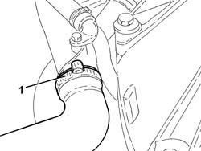
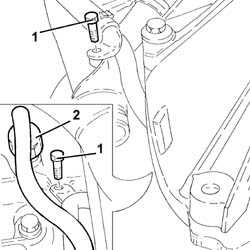
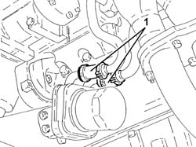
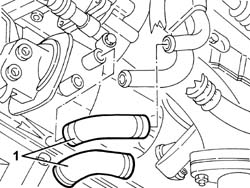
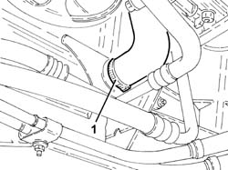
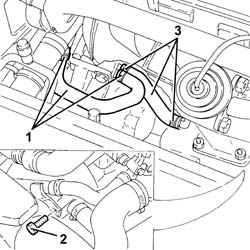

1088D47 oil exchange sleeve - r r
- Path
- Procedures > 10 ENGINE > 1088 ENGINE COOLING > 1088D coolant hoses and sleeves > 1088D47 oil exchange sleeve - r r
- Kind
- repair procedure (removal / refitting; the operation number is the code)
- Applies to
- all engines; all production periods
- Interactive page
- https://sloeber94.github.io/elrnDB-a156/en/#/3237712
Applies to: all engines; all production periods
 Removing
Removing
 Refitting
RefittingPlace the car on a lift.
Proceed with removal 7055B54 under-engine guard - r r .
1. Disconnect the lower radiator hose from the water pump rigid inlet pipe.

Applies to: all engines; all production periods
1. Undo the bolts fixing the coolant supply pipe to the engine oil heat exchanger.
2. Loosen the connector of the coolant outlet pipe from the engine oil heat exchanger on the water pump rigid inlet pipe side.

Applies to: all engines; all production periods
1. Loosen the bands and remove the engine oil heat exchanger coolant supply and return hoses.

Applies to: all engines; all production periods
Refitting
RemovingFit the engine oil heat exchanger coolant supply and return hoses and fix them using the bands.
Tighten the connector of the coolant outlet pipe from the engine oil heat exchanger on the water pump rigid inlet pipe side.
Tighten the bolts fixing the coolant supply pipe to the engine oil heat exchanger.
Connect the lower radiator hose to the water pump rigid inlet pipe.
Supply the engine cooling system with the recommended fluid.
 | Type | Component | Name | Qty. |
|---|---|---|---|---|
- | Fluid | ENGINE COOLING CIRCUIT | Mixture 50% Paraflu11 for Alfa Romeo/distilled water | 6.9 |
Proceed with refitting 7055B54 under-engine guard - r r .
Remove the car from the ramps.
Applies to: engines: 1.9 JTD 8v ; all production periods
Removing
RefittingPosition the vehicle on the ramp.
Raise the car.
1. Loosen the bands and remove the engine oil heat exchanger coolant supply and return hoses.

Applies to: engines: 1.9 JTD 8v ; all production periods
Refitting
RemovingFit the engine oil heat exchanger coolant supply and return hoses and fix them using the bands.
Lower the vehicle.
Top up the engine cooling system with the recommended fluid.
| Type | Component | Name | Qty. |
|---|---|---|---|---|
- | Fluid | ENGINE COOLING CIRCUIT | Mixture 50% Paraflu11 for Alfa Romeo/distilled water | 6.1 |
Remove the car from the ramps.
Applies to: engines: 2.4 JTD 10v; all production periods
Removing
RefittingPosition the vehicle on the ramp.
Proceed with removal 7055B54 under-engine guard - r r .
1. Disconnect the lower coolant outlet hose from the radiator and drain the engine coolant.

Applies to: engines: 2.4 JTD 10v; all production periods
1. Loosen the bands and remove the engine oil heat exchanger coolant return sleeve.
2. Undo the bolts securing the rigid coolant supply pipe to the engine oil heat exchanger.
3. Loosen the bands and remove the engine oil heat exchanger coolant delivery sleeve.

Applies to: engines: 2.4 JTD 10v; all production periods
Refitting
RemovingRefit the coolant supply hose to the engine oil heat exchanger and tighten the bands.
Tighten the bolts securing the rigid coolant supply pipe to the engine oil heat exchanger.
Refit the coolant return sleeve to the engine oil heat exchanger and tighten the bands.
Connect the lower coolant outlet hose from the radiator.
Proceed with refitting 7055B54 under-engine guard - r r .
Supply the engine cooling system with the recommended fluid.
| Type | Component | Name | Qty. |
|---|---|---|---|---|
- | Fluid [l] | ENGINE COOLING CIRCUIT | Mixture 50% Paraflu11 for Alfa Romeo/distilled water | 6.8 |
Remove the car from the ramps.